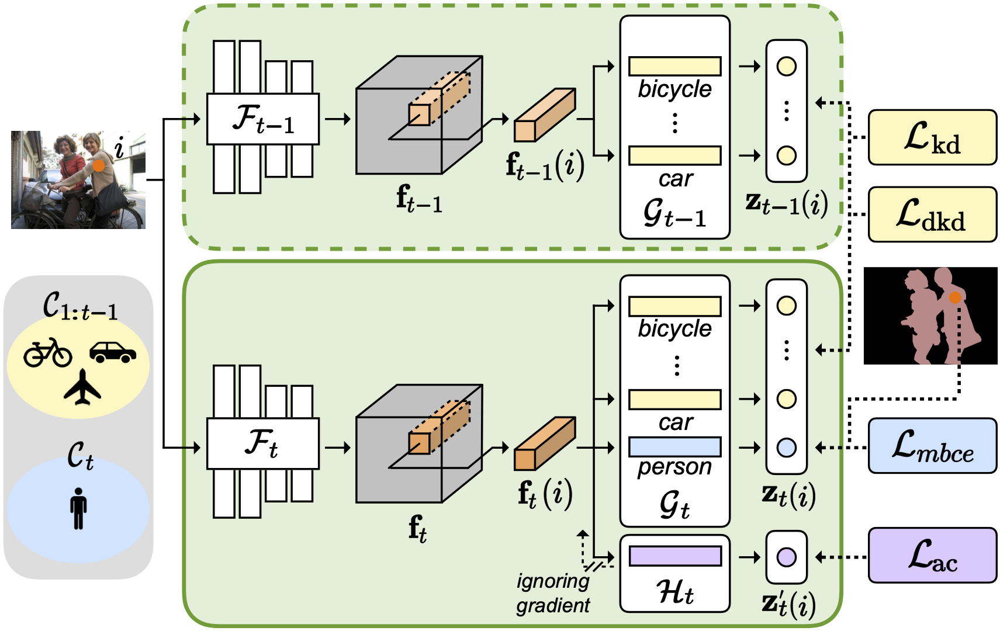
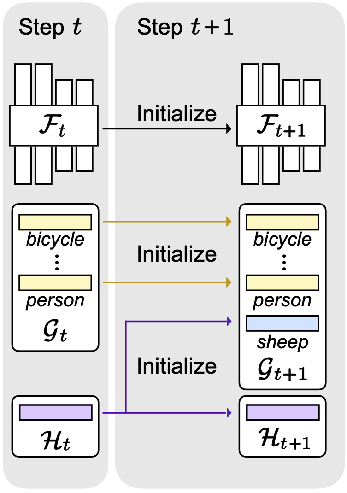
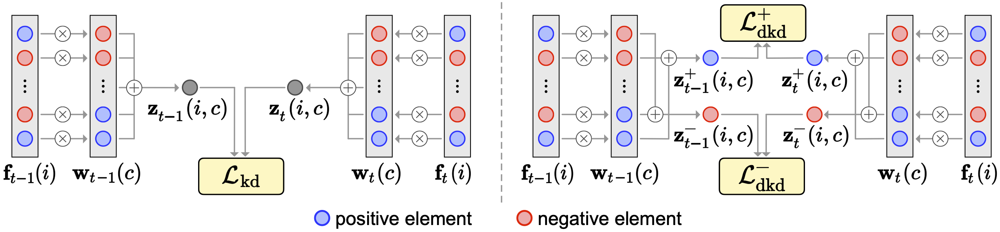

(a) Training.
(b) Initialization.
Overview of our framework. (a) Our framework consists of a feature extractor $\mathcal{F}_{t}$, classifiers $\mathcal{G}_{t}$, and an auxiliary classifier $\mathcal{H}_{t}$ at each step $t$. Given an input image, we extract a feature map $\mathbf{f}_{t}$, and obtain class logits $\mathbf{z}_{t}$ from corresponding classifiers $\mathcal{G}_{t}$. We train our model with four terms: mBCE ($\mathcal{L}_{\text{mbce}}$), KD ($\mathcal{L}_{\text{kd}}$), DKD ($\mathcal{L}_{\text{dkd}}$), and AC ($\mathcal{L}_{\text{ac}}$) losses. Note that the feature extractor does not receive any gradients from the AC term for the auxiliary classifier. (b) In the next step $t+1$, we initialize classifiers for novel classes with the previous auxiliary classifier $\mathcal{H}_{t}$. The feature extractor $\mathcal{F}_{t+1}$, a new auxiliary classifier $\mathcal{H}_{t+1}$, and other classifiers are simply initialized with the counterparts from the step $t$.
Abstract
Class-incremental semantic segmentation (CISS) labels each pixel of an image with a corresponding object/stuff class continually. To this end, it is crucial to learn novel classes incrementally without forgetting previously learned knowledge. Current CISS methods typically use a knowledge distillation (KD) technique for preserving classifier logits, or freeze a feature extractor, to avoid the forgetting problem. The strong constraints, however, prevent learning discriminative features for novel classes. We introduce a CISS framework that alleviates the forgetting problem and facilitates learning novel classes effectively. We have found that a logit can be decomposed into two terms. They quantify how likely an input belongs to a particular class or not, providing a clue for a reasoning process of a model. The KD technique, in this context, preserves the sum of two terms (i.e., a class logit), suggesting that each could be changed and thus the KD does not imitate the reasoning process. To impose constraints on each term explicitly, we propose a new decomposed knowledge distillation (DKD) technique, improving the rigidity of a model and addressing the forgetting problem more effectively. We also introduce a novel initialization method to train new classifiers for novel classes. In CISS, the number of negative training samples for novel classes is not sufficient to discriminate old classes. To mitigate this, we propose to transfer knowledge of negatives to the classifiers successively using an auxiliary classifier, boosting the performance significantly. Experimental results on standard CISS benchmarks demonstrate the effectiveness of our framework.
Approach

Comparison of KD and DKD. KD uses a logit $\mathbf{z}_{t}$, while DKD exploits positive and negative reasoning scores, $\mathbf{z}_{t}^{+}$ and $\mathbf{z}_{t}^{-}$. The DKD term encourages our model to output the reasoning scores of $\mathbf{z}_{t}^{+}$ and $\mathbf{z}_{t}^{-}$, similar to the ones of $\mathbf{z}_{t-1}^{+}$ and $\mathbf{z}_{t-1}^{-}$, respectively, obtained from a previous model.
We present a simple yet effective CISS framework that overcomes the aforementioned problems. To achieve better plasticity and rigidity for a CISS model, we propose to train a feature extractor, and introduce a decomposed knowledge distillation (DKD) technique. KD encourages a model to predict logits similar to the ones obtained from an old model. We have found that logits can be represented as the sum of positive and negative reasoning scores that quantify how likely and unlikely an input belongs to a particular class, respectively. In this context, KD focuses on preserving the relative difference between positive and negative reasoning scores only, without considering the change of each score. The DKD technique imposes explicit constraints on each reasoning score, instead of class logits themselves, which is beneficial to improving the rigidity of a CISS model together with KD effectively. We also propose an initialization technique to train classifiers for novel classes effectively. Note that training samples for novel classes are available only for each incremental step, suggesting that classifiers for the novel classes are trained with a small number of negative samples. To address this, we propose to train an auxiliary classifier in a current step, and use it to initialize classifiers for novel classes in a next step. To this end, we consider training samples of a current step as potential negatives for novel classes in a next step. We then train the auxiliary classifier, such that all pixels in current training samples as negative ones, transferring prior knowledge of negative samples to the next step for the classifiers of novel classes. Our initialization technique also does not require any pre-trained models, e.g., for saliency detection, in order to differentiate possibly negative samples. We demonstrate the effectiveness of our framework with extensive ablation studies on standard CISS benchmarks.
Paper
|
|
|
|
D. Baek, Y. Oh, S. Lee, J. Lee, B. Ham
Decomposed Knowledge Distillation for Class-Incremental Semantic Segmentation
In Advances in Neural Information Processing Systems (NeurIPS) , 2022
[arXiv][Code]
|
BibTeX
@InProceedings{Baek_2022_NeurIPS,
author = {Baek, Donghyeon and Oh, Youngmin and Lee, Sanghoon and Lee, Junghyup and Ham, Bumsub},
title = {Decomposed Knowledge Distillation for Class-Incremental Semantic Segmentation},
booktitle = {NeurIPS},
year = {2022}
}
Acknowledgements
This work was partly supported by Institute of Information & communications Technology Planning & Evaluation (IITP) grant funded by the Korea government (MSIT) (No.RS-2022-00143524, Development of Fundamental Technology and Integrated Solution for Next-Generation Automatic Artificial Intelligence System) and the KIST Institutional Program (Project No.2E31051-21-203).